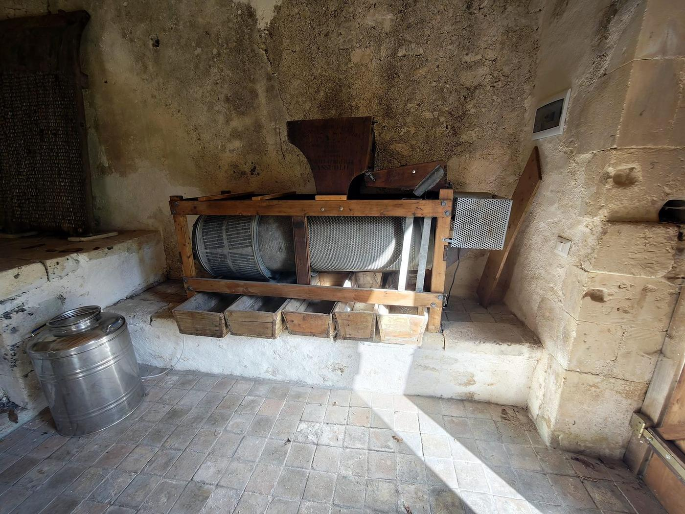
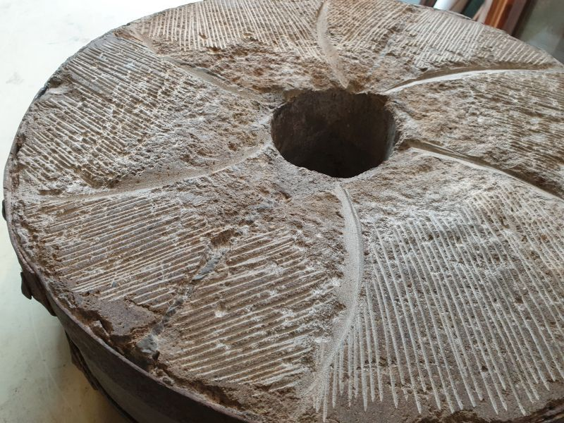
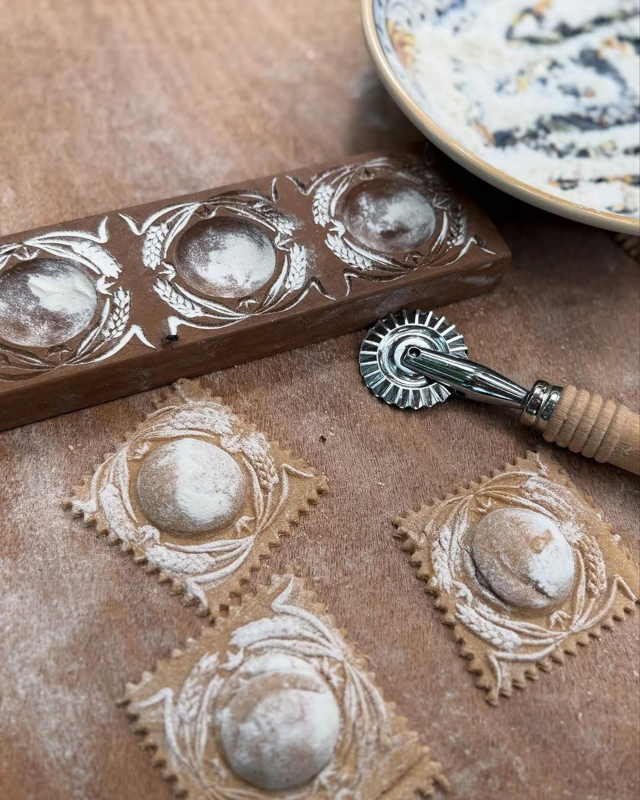
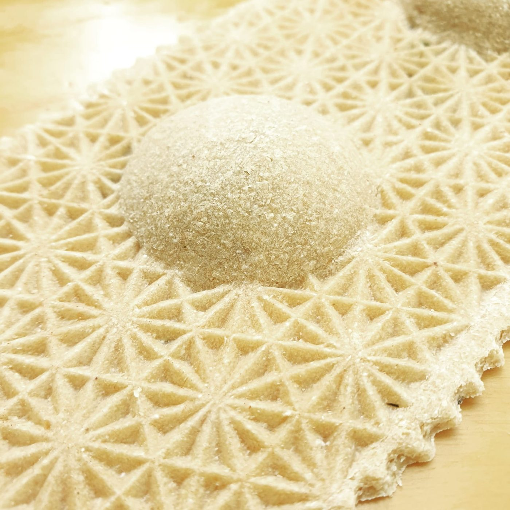
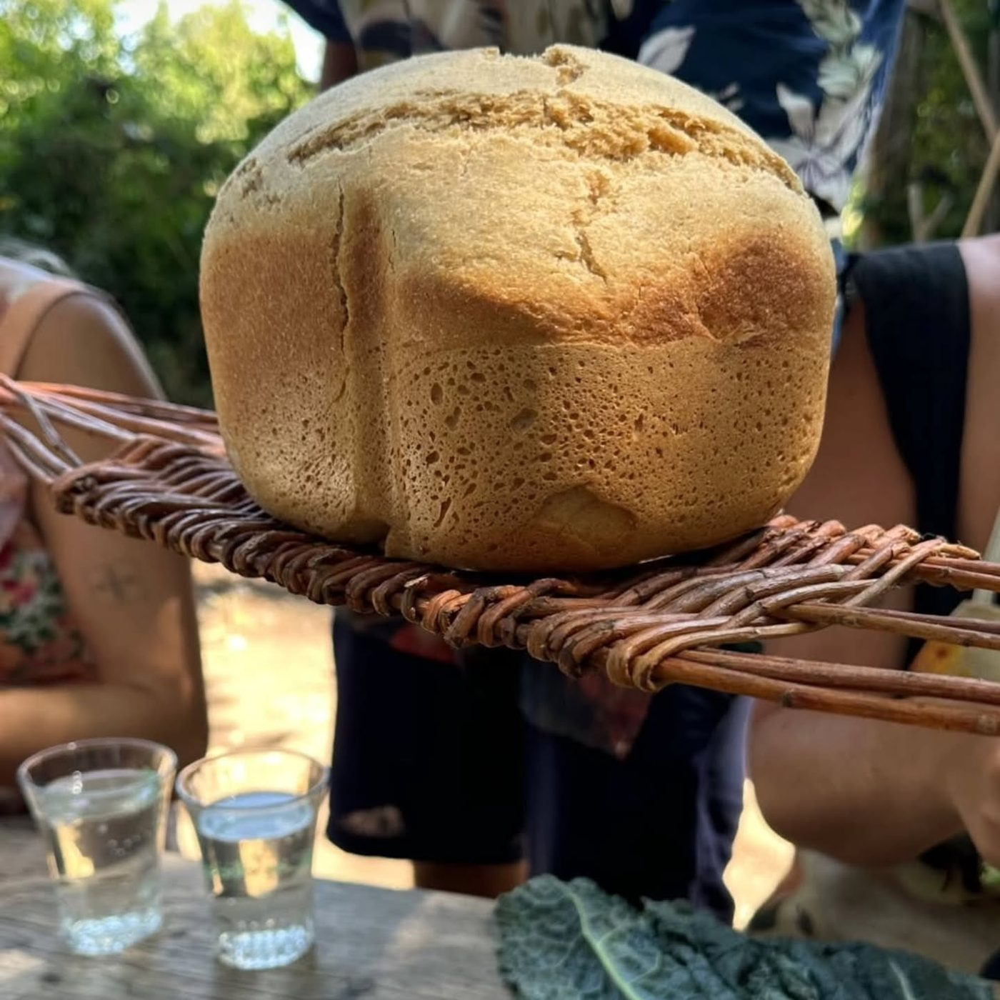
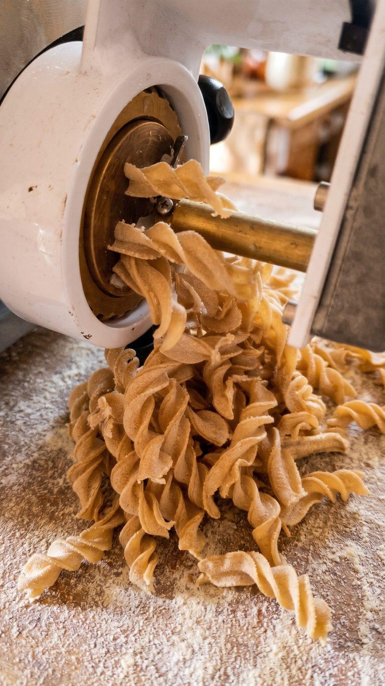
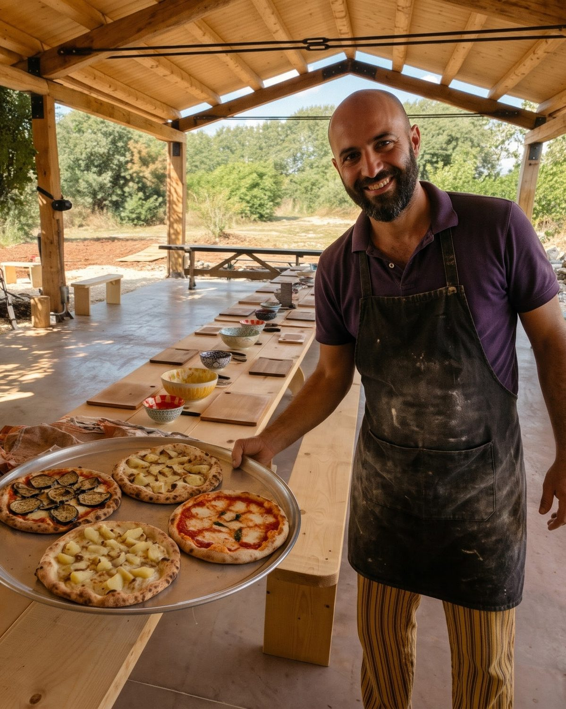
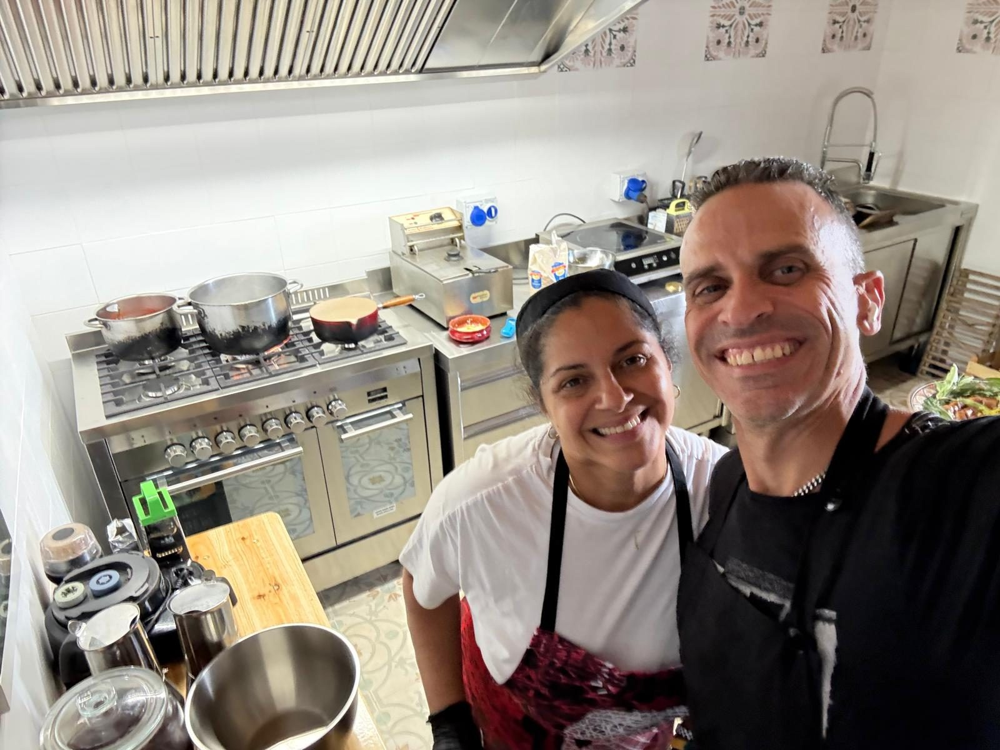
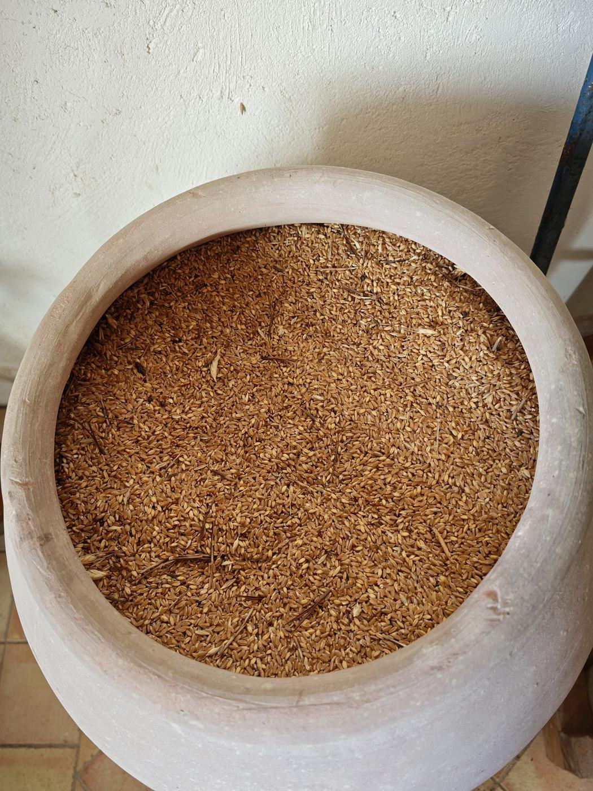

THE PRODUCTION LINE
Six steps, one grain.
Each step is shown and explained here, with the original tools and machines, so visitors can see how grain becomes food.
01THE FIELD
Durum wheat is sown in autumn and harvested in early summer, when the ears turn gold.

02CLEANING
The grain cleaner turns and sieves the wheat, removing dust, seeds and small stones.

03MILLING
This is how the grain was ground: slowly, between two granite stones, keeping its germ, flavour and scent.

04SIFTING
The meal was then sifted by hand: the fine semolina for the dough, the bran set aside.

05THE DOUGH
Semolina, water, salt and time. Kneaded by hand, the way it has always been done in Sicilian homes.

06THE TABLE
The dough becomes bread, pasta and pizza: the foods that wheat has fed for centuries.
WHAT THE WHEAT BECOMES
Bread, pasta and pizza.
Three foods from the same flour, each shaped by its own gesture.

Bread Durum wheat semolina, yeast, water and salt. A golden crust and a soft, airy crumb.
Pasta Semolina and water only, drawn through a bronze die or pressed by hand with carved wooden stamps.
Pizza A soft dough stretched by hand and topped with what the garden gives that day: aubergine, potato, tomato and basil.IN THE LABORATORY
Hands in the flour.
The laboratory kitchen and the long table under the pavilion, where visitors learn how dough is kneaded and shaped by hand.


THE BRAN
Nothing is wasted.
What the sieve holds back, the bran, goes back to the farm: to the animals and to the soil.